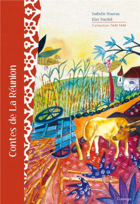

Décidément, les premiers sites sont picturaux ! Après un site rempli de gif animés un autre qui parle des nettaoyages de peinceaux de Sophie Bazin, voici une nouvelle page web de peintures.
Le thème des peinture est cette fois-ci typiquement réunionnais et l'artiste vient elle aussi de la Réunion. Évidement, l’artiste peintre est une femme : Claire Dardel.
Après Sophie Bazin c’est la deuxième artiste peintre que je présente en seulement quatre sites.
{% Image page, "case-creole-par-claire-dardel-89.jpg", "Aquarelle représentant une case créole au toit et murs rouges et aux volets turquoises que la végétation cache par endroits. La feuille est signée «claire89»" %}
Depuis 1997, Claire Dardel a grandi, Sa collection aussi a grandi avec de nouvelles aquarelles à son portfolio. Ce portfolio d'aquarelles a d’ailleurs changé de site plusieurs fois de suite avant de disparaitre pour de bon.
Mais On les retrouve aussi maintenant sur certaines boites de chocolats vendus par Colipays avec d'autres produits de la Réunion qui sont expédiés en Europe par la poste. Ces boites de chocolats sont vendues comme des collectors. Il faut dire que les façades de cases créoles colorées et avec ornements qui sont la spécialité de Claire sont une illustration parfaite pour des produits de la Réunion.
On voit mal le chocolat pays enveloppé dans une scène d’hiver de Brügel ou des dessins du père noël. D’autant plus qu’ici Noël a lieu en été.
Il est bon de suivre les artistes que j'ai découvert il y a plus de 20 ans et de voir comment ils évoluent. Si le site perso de la peintre a disparu, on la retrouve dans les galeries de l'île où elle continue de présenter son travail, utilisant la même technique de l'aquarelle.
{% Image page, "la-dodo-kler-dardel.jpg", "Aquarelle représentant un vieux créole avec un chapeau blanc rayé de noir têete penchée, passant devant un mur pein d'une publicité pour la bière Bourbon (la dodo)" %}
J'ai aimé retrouver sa toile VOILE très réaliste à L’artothèque de la Réunion, un jeune musée d’art contemporain qui organise des résidences d'artiste et des près d'œuvres d'art. Mais on la retrouve aussi dans la galerie OPUS basée à Saint-Leu mais qui organise ses ventes en ligne. Vous remarquerez que son nom s'orthographie maintenant Kler Dardel en réunionnais donc.
De son nom Kler Dardel elle a aussi signé les illustrations d'un livre "ecrit avec Isabelle Hoarau sur les contes de la Réunion aux éditions Cipango.

Contes de la Réunion
Auteure: Isabelle Hoarau
Illustratrice: Kler Dardel
Editeur Cipango
Collection TAM TAM
Date de parution: 16/03/2019
{% fnac "dardel", "https://www.fnac.com/a12877077/Isabelle-Hoarau-Contes-de-la-Reunion" %}
En 2024, je présentais le prix Célimène qui récompense les artistes femmes de l'île. Et c'est avec une heurese surprise que je retrouve Ker Dardel (ici orthographiée Claire Dardel) dans la liste des artistes confirmées qui animent des ateliers d'art plastique le 8 mars 2025, pour les femmes, artistes-amateurs qui veulent s'essayer à la peinture avant de participer au concours.
Kler Dardel réalise d'ailleurs souvent des ateliers comme par exemple de l'initiation au magasin d'arts décoratifs du Port Art et Toiles, ou bien dans un cadre plus élaboré comme le projet artistique d'insertion des femmes en précarité « Elles se racontent en couleurs » organisé par le CCAS de la Possession.